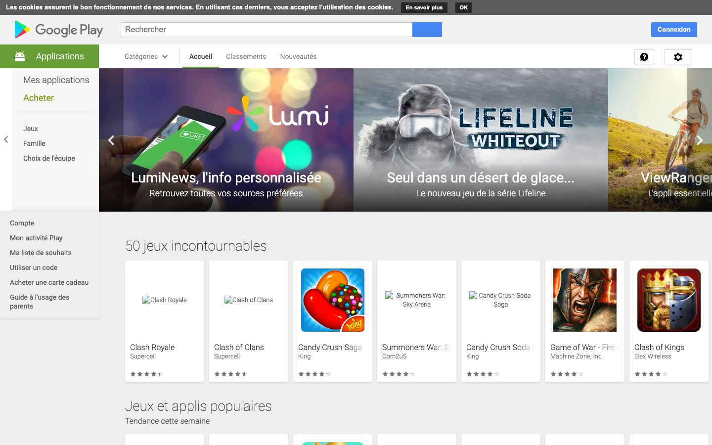

References / Website / 198
Google Play store website, 2016
The 2016 web store for Android apps, in French: a green section tab, white app cards with soft shadows on pale gray, and Roboto Light headings.
- Source
- Google Play, Apps (French edition) (archived copy)
- Creator
- Made
- 2016
- Style
- Material Design (agent-proposed, not yet reviewed by a person)
- Moods
- Orderly, bright
- Evidence
- Captured with
tools/capture.mjs(headless Chrome, 1440 × 900) on 28 September 2026 and inspected. The screenshot shows the first viewport; the measurement covers up to four screens. The archive served the French edition. Four app icons in the first card row did not load, and a thin cookie strip covers the top edge. - Reviewed
- Rights
- Third-party work, stored with credit for commentary. License: unverified. Rights policy
The live Google Play store has a different design.
Observed
- A white header holds the Google Play logo, a long search field with a blue search button, and a blue raised “Connexion” button with square corners.
- A solid green tab labeled “Applications” with a white Android glyph marks the section. Beside it, text tabs read Catégories, Accueil, Classements, and Nouveautés, with a gray underline under Accueil.
- A carousel of three photographs runs edge to edge, with white titles over a dark gradient at the bottom of each photo.
- Below, the heading “50 jeux incontournables” is set in large Roboto Light. A row of white app cards with soft, short shadows sits on a pale gray ground. Each card holds an icon, a title, a developer name, and gray stars.
- Four of the seven app icons in the row did not load and show alt text. A thin dark cookie strip runs across the top of the page.
Why it belongs
The page measures a shadow on 36 % of its boxes, with a median blur of 4 px and offset of 2 px, which matches a 2 dp card. Its chromatic share is 0.01, because color is limited to the green tab, the blue buttons, and photographs. The gradient share of 0.14 comes from the scrims under the carousel captions, not from gradient fills on surfaces.
Borrow
Put catalog items on identical white cards with a 2 dp shadow on a pale gray ground, and let only the item images carry color.
Measured
Machine-extracted by tools/extract-traits.js on . Full measurement.
- Type families
- Roboto (95%), Arial (5%)
- Type scale ratio
- 1.34
- Median radius
- 0 px
- Mean chroma
- 0
- Palette
- #ffffff 46%
- #f1f1f1 27%
- #000000 10%
- #5a5a5a 8%
- #212121 6%
- #303030 1%
- #689f38 1%
- #8d8d8d 1%

